SoSe 2024 Serafin Kollegger & Julian Huber
Automatisierungstechnik
Steuerungsprogramme Hierarchischer Ansatz von Graphengruppen
Entwicklung von Steuerungsprogrammen
- Funktionseinheiten können definiert werden, um die Komplexität von Zustandsgraphen zu reduzieren.
- Sie repräsentieren das Verhalten einzelner Komponenten.
- Übergeordnete Funktionsgruppen steuern diese Einheiten.
- Eine sorgfältige Auswahl der Komponenten ist entscheidend.
- Eine hierarchische Struktur kann für eine zweckmäßige Verknüpfung der Funktionseinheiten genutzt werden.
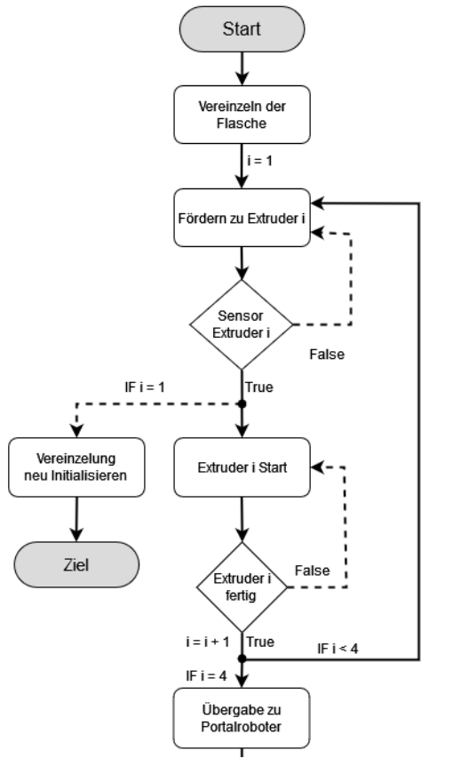
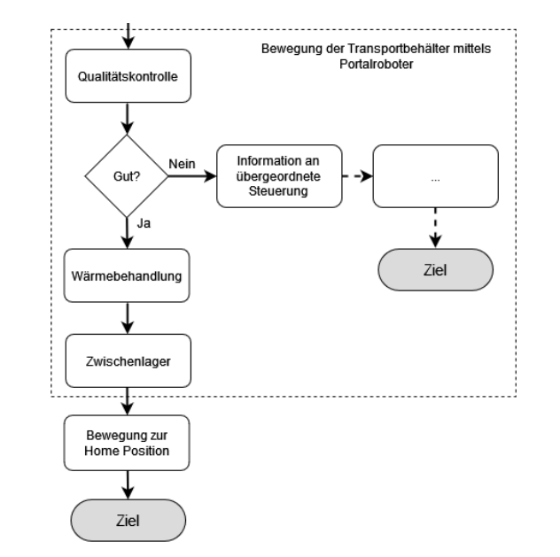
Hierarchischer Ansatz
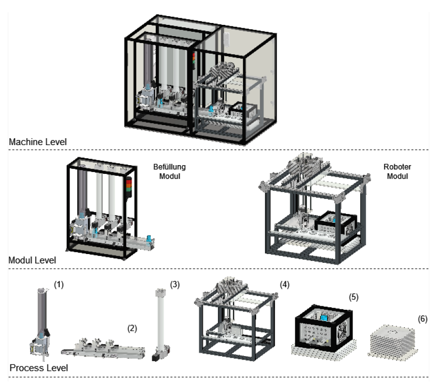
Hierarchischer Ansatz
- Definition von drei Hauptebenen für den hierarchischen Ansatz
- Oberste Ebene: Maschinen-/Anlagen-Ebene (Machine Level)
- Darunter: Modul-Ebene (Modul Level)
- Unterste Ebene: Prozess-Ebene (Process Level)
- Funktionseinheiten werden auf der Prozess-Ebene gesteuert
- Anpassung der Programmstruktur an den mechanischen Aufbau
Erweiterungen des Ebenenansatzes
Submodule
- Einführung zusätzlicher Submodul-Ebenen für komplexe Anlagen
- Die Modul-Ebene besteht aus Submodulen anstelle von Funktionseinheiten
- Submodule sind wiederum aus Funktionseinheiten zusammengefasst
Hardware Ebene - Ziel: Herstellung eines hardwareunabhängigen Steuerungscodes - Steuersignale in der Prozessebene werden allgemein und abstrahiert gehalten - Die tatsächlich angeschlossene Hardware wird durch eigene Funktionsbausteine gesteuert - Dadurch kann ein Großteil des Programmieraufwands bereits erledigt werden, bevor die Anlagenentwicklung abgeschlossen ist - Flexibilität, da sich Sensoren und Aktoren noch ändern können, ohne den Programmieraufwand zu erhöhen
Graphengruppen
Pseudobeispiel in TwinCAT...
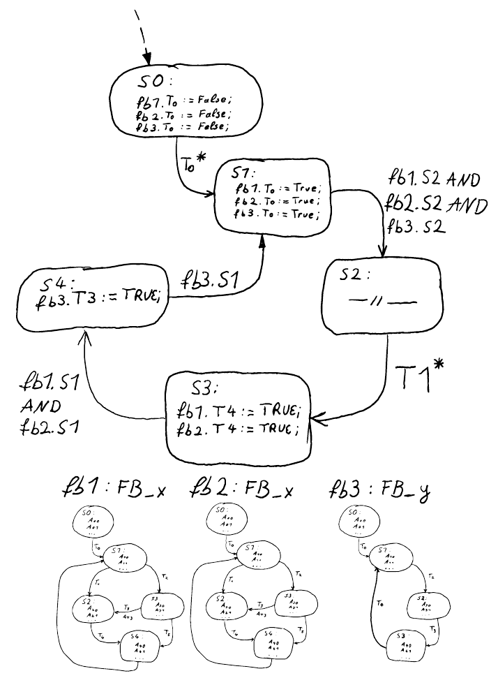
Graphengruppen
Drei Grundgedanken sollten dabei Hilfe bieten, um eine Graphengruppe zu erstellen. - Globale Initialisierung - Sequentielle Startsignale - Signalaustausch der Funktionseinheiten
Globale Initialisierung
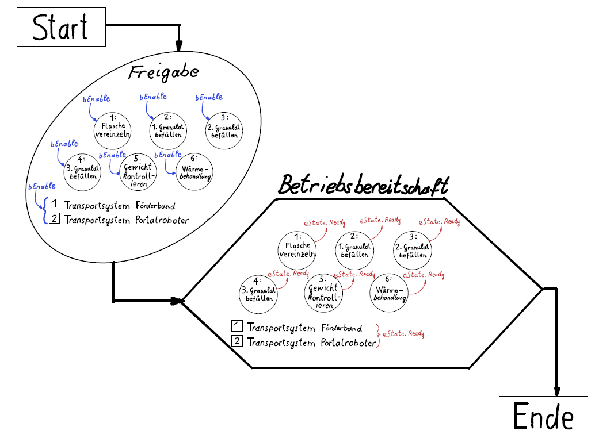
Sequentielle Startsignale
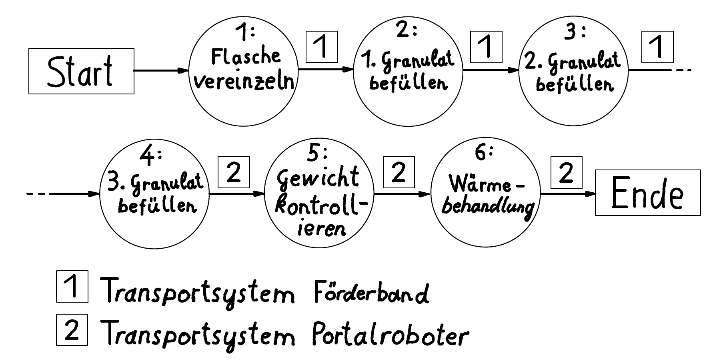
Signalaustausch der Funktionseinheiten
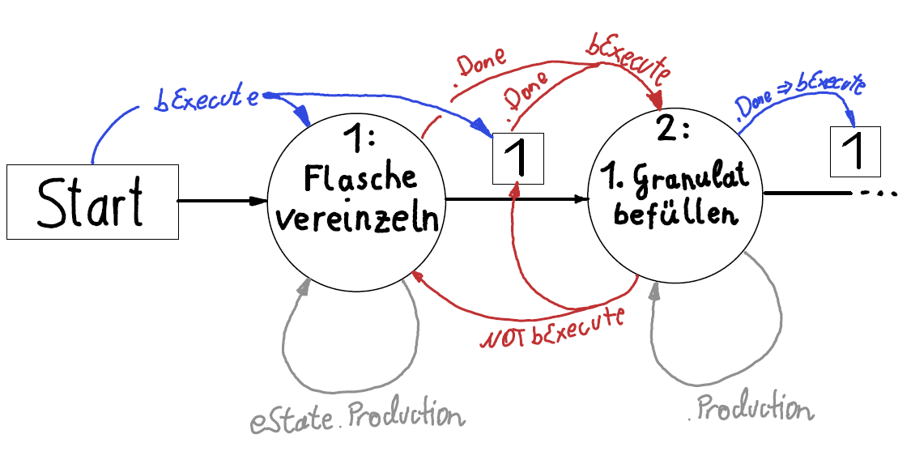
Programmstruktur abhängig von Funktionseinheiten
Variante 1

Variante 2

Variante 3

Basisaufgaben
Beschreibung Transporteinheit
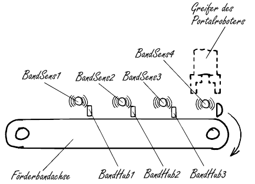
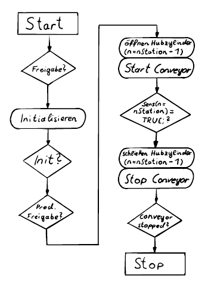
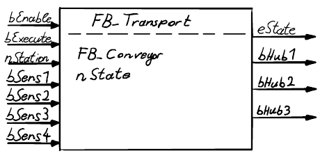
Abfüllmodul
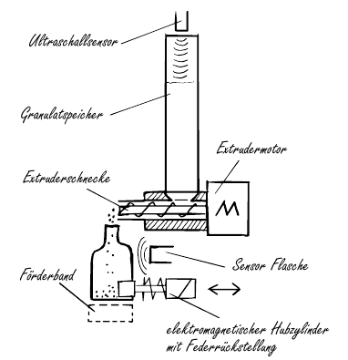

Manipulatoreinheit
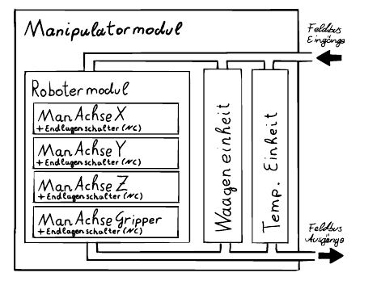
Ablaufdiagramm Robotermodul
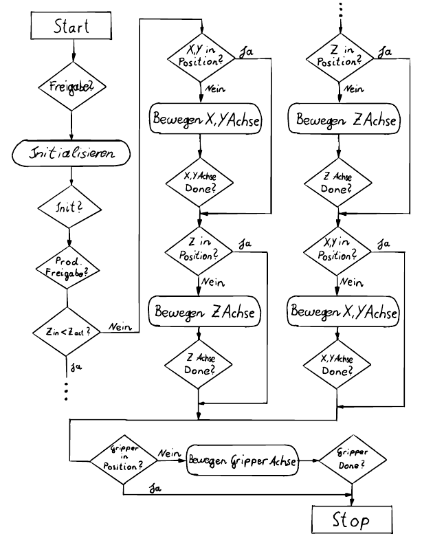